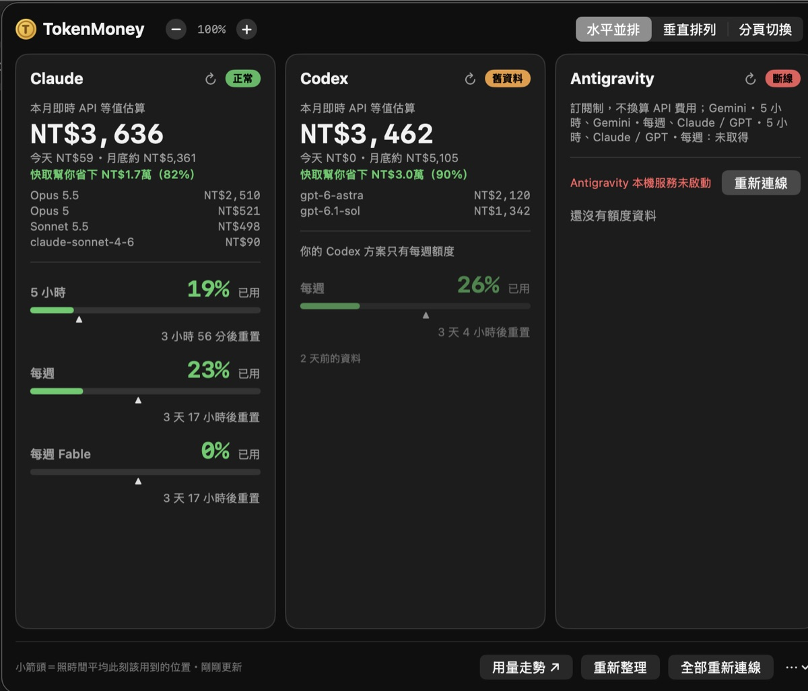
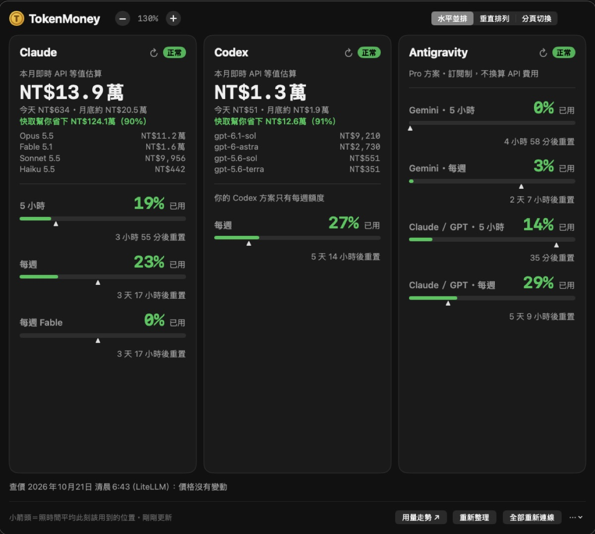

這篇在講什麼
我同時用桌機和筆電，兩台都裝了自己做的 AI 用量小工具 TokenMoney。結果兩台各算各的：桌機算出這個月 Claude 約 13.9 萬元，筆電算出 3,846 元，沒有一個地方告訴我加起來是多少。這篇講我怎麼讓兩台合在一起看：每台只把「算好的數字」放進 iCloud 雲碟的一個共用資料夾，再讀另一台的檔案加總，對話內容留在原本那台電腦。也把做的過程中，另一家 AI 審查抓到的幾個「會把錢算錯」的地方攤開講。
- 有兩台以上電腦，自己做了小工具或請 AI 做了小工具，發現每台數字不一樣的人
- 想把兩台電腦的統計（用量、次數、花費）合在一起看，又不想架伺服器的人
- 要幫客戶設計「多台裝置合計」，想先知道會在哪裡算錯的人
- 一個判斷：哪些數字要合計、哪些本來就是同一份不用合
- 五個零件的做法：共用資料夾、每台一個檔、電腦代號、寫入頻率、只交換結果
- 四個會重複計算或漏算的陷阱與防法，以及一段可以直接貼給你的 AI 的提示詞
桌機算出 13.9 萬元，筆電算出 3,846 元，哪個才對
TokenMoney 是我做的 Mac 選單列小工具，會把我用 Claude Code 和 Codex（兩個寫程式用的 AI 工具）的用量，照官方 API 牌價換算成台幣。這是一個參考金額，用來看自己用了多少，我實際付的是月費訂閱，沒有付這麼多。
我在桌機用了一陣子，今天在筆電也裝了一份。打開一看，筆電這個月 Claude 是 3,846 元，桌機是 13.9 萬元。
兩個都對。TokenMoney 是讀「這台電腦裡」AI 留下的對話紀錄來算，筆電讀不到桌機的紀錄，桌機也讀不到筆電的。所以兩台各算各的，我想知道這個月總共用了多少，只能兩台都打開，自己加。


- 用 AI 解決一件事，花的錢值不值得？：這一段只講兩台為什麼對不起來，那篇講 token 的四種價格、快取為什麼能省九成。
先分清楚：哪些數字要合，哪些本來就是同一份
我把兩台的畫面放在一起看，有一部分兩台顯示的一樣。
| 畫面上的數字 | 從哪裡來 | 兩台一樣嗎 | 要不要合計 |
|---|---|---|---|
| Claude 額度百分比（5 小時內、每週可以用多少） | 同一個帳號的用量 | 一樣，當時兩台都是 19% 和 23% | 不用，它本來就是同一份 |
| 本月花費（換算成 API 台幣） | 讀這台電腦裡的對話紀錄 | 不一樣 | 要 |
合計前還要確認一件事：兩台的原始檔案沒有重疊，例如沒有把一台的紀錄整份複製到另一台，不然同一筆會被算兩次。
三種做法，我選了只交換結果
| 做法 | 怎麼做 | 代價 |
|---|---|---|
| 把原始紀錄整個複製過去 | 讓一台讀得到兩台的全部對話紀錄 | 檔案很大、同步很慢，對話內容到處複製，隱私風險高 |
| 自己加 | 兩台都打開看，心算 | 不用花時間做，但每次都要開兩台 |
| 只交換算好的數字 | 每台把自己算好的本月金額寫成小檔案放 iCloud，再讀另一台的加總 | 要改一次程式，兩台都要更新；另一台關機時，它的數字會停在最後一次 |
我選第三種。
合計只需要「每天花多少、每個模型花多少」這幾個數字。所以對話內容留在原本那台電腦，放上 iCloud 的是一個幾 KB 的小檔案，裡面有日期、金額、token 數量、模型名稱，加上電腦名稱和一串電腦代號，沒有對話內容，也沒有檔案路徑。
五個零件，每一個都有理由
| 零件 | 做法 | 為什麼這樣做 |
|---|---|---|
| 共用資料夾 | iCloud 雲碟裡開一個資料夾，例如 TokenMoney/peers/ | 兩台登同一個 Apple 帳號就會自動同步，不用架伺服器。我沒放進筆記資料夾，避免每幾分鐘一次的小檔變動干擾筆記軟體 |
| 每台一個檔 | 每台只寫自己的檔，檔名是這台的代號 | 兩台不會同時改同一個檔，就不會互相蓋掉 |
| 電腦代號 | 用 Mac 出廠就有的硬體識別碼（硬體 UUID）算出一串代號，取不到就乾脆不合計 | 第一版用隨機代號存在電腦裡，審查時發現會出事，下一段講 |
| 寫入頻率 | 數字有變才寫，而且最多 5 分鐘一次；先寫暫存檔再一次換名 | 減少 iCloud 一直同步；另一台不會讀到寫一半的檔 |
| 只交換結果 | 不放對話內容、不放檔案路徑 | 原始資料不出門。電腦名稱會出現在檔案和畫面上，介意的話改成「桌機」「筆電」這種別名 |
畫面上，卡片標題會寫「（2 台合計）」，大數字底下列出明細，例如「這台 NT$3,846＋桌機 NT$14.0萬」。另一台的資料如果是 2 分鐘以前寫的，後面會標「幾分鐘前」。這個時間是那台最後一次寫入的時間，數字沒變動時本來就不會重寫，所以它不代表那台關機了。
另一家 AI 審查抓到四個會算錯錢的陷阱
程式寫好、我自己的測試也過了之後，我請另一家公司的 AI（OpenAI 的 Codex）只讀不改，專門找「會算錯錢」的情況。它審了兩輪，抓出四個。這四個都是我自己測試時沒想到的。
| 陷阱 | 錯成什麼樣 | 怎麼防 |
|---|---|---|
| iCloud 同步衝突，留下「檔名 2.json」這種副本 | 同一台被加兩次 | 同一個代號的檔，只取寫入時間最新的那份 |
| 電腦代號存在電腦裡，重設後重新產生一個新的 | 自己的舊檔被當成另一台，自己算兩次 | 改用硬體 UUID 當代號，重設也不會變；讀檔時看檔案內容裡的代號，是自己就跳過 |
| 用「移轉輔助程式」把舊電腦搬到新電腦 | 存在電腦裡的代號被複製過去，兩台一樣，互相蓋掉，漏算一台 | 同上，硬體 UUID 每台不同 |
| 某台關掉合計功能 | 另一台還在加它最後一次的舊數字 | 關掉時把自己的檔改成「已停用」標記，另一台看到就不加 |
另外三條保險：上個月的檔不算進這個月；檔案讀不到、格式不對、金額不是正常數字，就整台跳過這次（iCloud 還沒下載完很常見）；整個交換過程出錯，就退回只顯示這台。合計功能壞掉，不能連原本的單機功能一起弄壞。
最後一條「格式不對就跳過」，是我寫這篇文章時再請 Codex 對照程式審一次才補上的：它發現如果另一台的檔案內容整份變成別的格式，收集程式會直接停掉。這段讓我記得：自己寫、自己測，測的都是自己想得到的情況。換一家 AI 只找錯，才找得到我沒想到的那幾種。
- OpenAI 出了官方外掛，讓 Codex 能接到 Claude Code 一起工作：這一段只講這次審出了什麼，那篇講怎麼把 Codex 接進 Claude Code 當審查員。
只更新一台，畫面看起來跟沒改一樣
筆電改好、裝好之後，我按了「重新整理」，畫面還是只有筆電自己的數字。我以為沒改成功。
原因是桌機還在跑舊版。舊版不會把數字放上 iCloud，筆電就沒東西可以加。這種「兩台都要更新才看得到效果」的改動，只更新一台時，畫面跟沒改一模一樣。
我人在筆電前面，所以請筆電上的 AI 傳訊息給桌機上開著的另一個 AI 對話（Claude Code 的遠端控制功能，可以讓同一個帳號在不同電腦開的對話互相傳話），請它在桌機下載新版、重新安裝。交代的時候加了兩道保險：先確認自己真的在桌機，不是就停；桌機那個資料夾有沒存的改動也停，不要蓋掉。
遠端那邊做完不會回報，所以筆電這邊盯著 iCloud 的共用資料夾：桌機的檔案一出現，就代表桌機的新程式已經在寫資料了。大約三分鐘後檔案出現，筆電重算一次，卡片變成「2 台合計」：
| 筆電 | 桌機 | 兩台合計 | |
|---|---|---|---|
| Claude 本月 | 3,846 元 | 139,823 元 | 143,669 元 |
| Codex 本月 | 3,469 元 | 13,073 元 | 16,542 元 |
（以上都是照 API 牌價換算的參考金額。）
- 在家裡桌機上用 Codex 做好網頁後，出門用筆電想要改，就找不到檔案了？：這一段只講「數字」怎麼交換，那篇講程式碼為什麼要交給 git、不要放 iCloud。
這套做法管得到什麼，管不到什麼
兩台以上電腦的本月數字加總。對話內容與檔案路徑不離開原本那台。同步衝突副本、重設、搬家換代號、停用、檔案壞掉，都不會算錯。
即時一致：iCloud 同步通常幾分鐘，偶爾更久。另一台關機時數字停在最後一次。原始紀錄本身有重疊會重複計算。兩台價目表版本或匯率不同會有小落差。我的年度用量總表還沒合計，目前只做了本月卡片。
所以它適合「看個大概、幾分鐘的落差沒關係」的數字：用量、花費、次數。需要秒級準確的數字，不適合用這招。
不是 Mac、或是公司電腦，怎麼辦
這套的五個零件換平台也能用：共用資料夾換成 OneDrive 或 Google Drive 的同步資料夾，電腦代號換成那個系統取硬體識別碼的方法。公司電腦能不能登私人帳號、能不能把用量統計放雲端，先問公司的 IT。這部分我自己沒有實測過。
你可以怎麼開始：把這段貼給你的 AI
你如果也有一個「每台各算各的」的小工具，可以把下面這段貼給你的 AI，讓它照這套幫你改。
給你的 AI 讀的技術備忘（人可以跳過）
- 檔案格式：
{"v":1,"id":"<代號>","name":"<電腦名稱>","month":"YYYY-MM","written_at":<秒>,"providers":{"<類別>":{"days":{"YYYY-MM-DD":[美元,token]},"models":{"<型號>":美元},"nocache":美元}}} - 停用標記：
{"v":1,"id":"<代號>","name":"<電腦名稱>","disabled":true,"written_at":<秒>}。讀取時先依 written_at 選出同代號最新的一份，再看它有沒有停用。 - 代號：
ioreg -rd1 -c IOPlatformExpertDevice取 IOPlatformUUID，sha256 取前 12 碼。 - 從舊的隨機代號版本升級時，舊代號留下的檔要另外清掉，不然會被當成另一台。
- 加總時先把各台的每日資料合併，今天金額、月底預估、快取省下的金額都用合併後的資料重新計算。
- 各台各自用自己的價目表算出美元，接收端用自己的匯率換台幣；要嚴格一致，交換檔要帶上價目表版本與匯率，不一致時在畫面上提示。
這篇提到過的
- 用 AI 解決一件事，花的錢值不值得？：TokenMoney 怎麼把用量換成台幣
- 桌機做好網頁，筆電找不到檔案？：程式碼交給 git，文件交給 iCloud
- 讓 Codex 接到 Claude Code 一起工作：另一家 AI 怎麼當審查員
再往前後延伸
- 兩個 AI 同時改一個網站，為什麼會打架？：兩個 AI 同時改同一份東西，怎麼不互相蓋掉
- AI 出錯不可怕，沒有備援才可怕：改之前先備份，改壞了怎麼退回
我是江江教練。